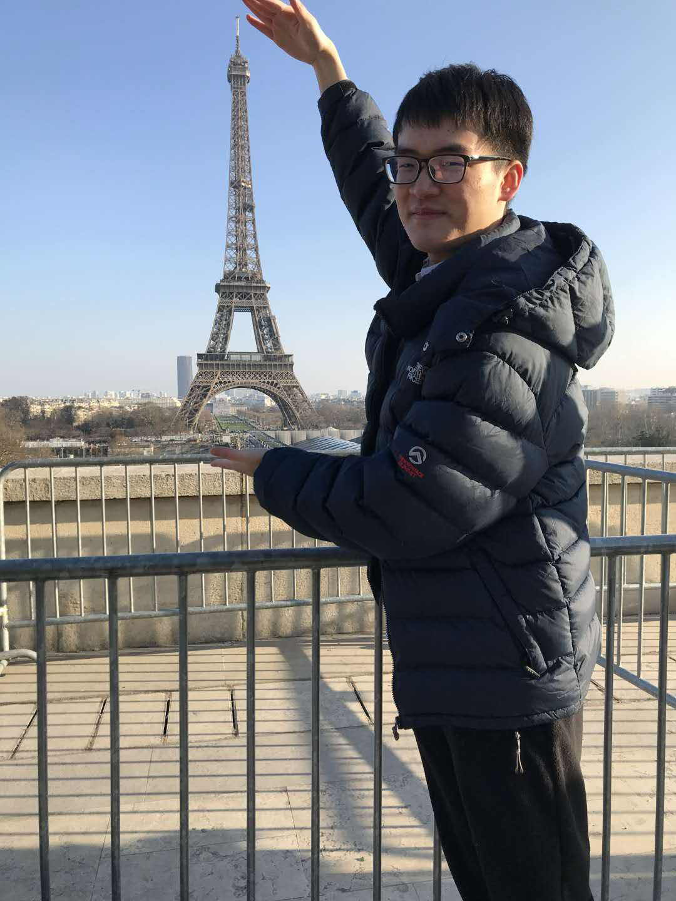

I A photo of myself  am currently a final-year Ph.D. student from Department of ECE at University of Alberta, Canada (UoA) advised by Professor Li Cheng. During my Ph.D., I was fortunate to intern at Meta Reality Labs for two times, advised Dr. Yuanlu Xu in 2023 and Dr. Minh Vo in 2022. Before Ph.D., I graduated from University College London (UCL) with a MRes degree in Department of Computer Science advised by Professor Jun Wang and Beijing Institute of Technology (BIT) with a BSc degree advised by Professor Huiqi Li. As I am near the completion of my PhD, I will join Shenzhen Institute of Advanced Technology, Chinese Academy of Sciences (SAIT) as a Research Assisstant Professor soon. If you are interested in collaborating on research or have any other inquiries, please don't hesitate to contact me. Thank you for visiting!
My research interests lie in computer vision, machine learning, and reinforcement learning.